Chapter 9. 해시 테이블(Hash Table)¶
0절. 개요
1절. 해시 테이블
2절. 충돌
3절. 체이닝
4절. 개방 주소
5절. 검색
0절. 개요¶
Hash Table¶
- Unordered Collection of Key-Value pairs
- 원소의 저장자리가 원소 값에 무관하게 결정
- 평균 상수 시간 \((O(1))\) 에 삽입 가능
- 매우 빠른 응답이 필요한 응용
- 최솟값(최댓값) 검색 미지원
1절. 해시 테이블¶
해시 테이블¶
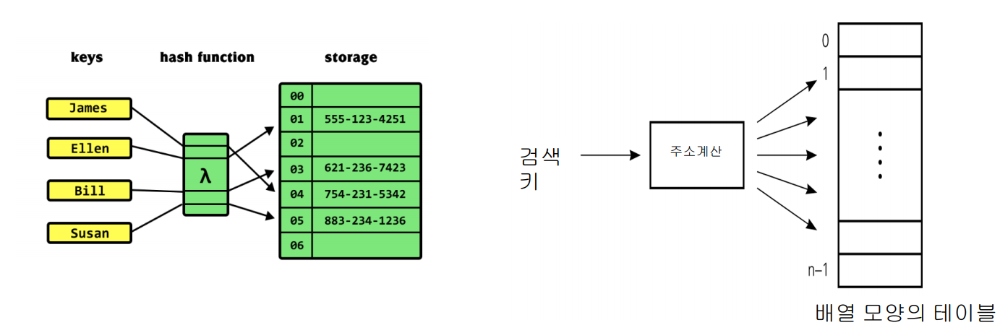
해시 테이블 예시¶
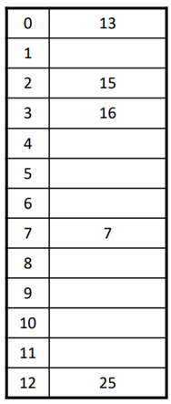
- 크기가 13인 해시 테이블에 5개 원소가 들어간 예시
- 입력 : 25, 13, 16, 15, 7
-
해시 함수 : h(x) = x mod 13
-
h(25) = 25 mod 13 = 12
- h(13) = 13 mod 13 = 0
- h(16) = 16 mod 13 = 3
- h(15) = 15 mod 13 = 2
-
h(7) = 7 mod 13 = 7
-
적재율(Load Factor) = 저장된 원소 / 해시 테이블 크기 = 5 / 13
- 데이터 입력이 증가할 경우
- 적재율 증가
- 충돌(Collision) 발생 확률 증가
해시 함수(Hash Function)¶
| 성질 |
|---|
| 입력되는 원소를 해시 테이블 전체에 고루 저장 |
| 충돌 가능성이 작은 방향 |
| 계산 간단 |
해시 함수 : 나누기(Division) 방법¶
- h(x) = x mod m
- m : 해시 테이블 크기, 대개 소수(prime)
- 해시 테이블 크기 : \(2^k\) 에 가깝지 않은 소수
- 해시 값 : 입력 원소의 모든 비트를 이용
- 함수 값이 퍼지도록 설정
해시 함수 : 곱하기(Multiplication) 방법¶
- h(x) = m(xA mod 1) : 올림
- A : 0 < A < 1 인 상수
- Knuth는 \((\sqrt{5} - 1)/2\) 제안
- m이 소수일 필요 X
- 보통 \(2^p\) (\(p\) == 정수)
해시 함수 : 곱하기(Multiplication) 방법 예시¶
- m = 65,536, A = 0.6180339887 인 경우
- x = 1,025,390의 해시값은 xA = 633,725.871673093
- (xA mod 1) = 0.871673093
- m을 곱하면 57,125.967
- 곱하기 방법 올림수 57,125
곱하기(Multiplication) 방법 작동¶
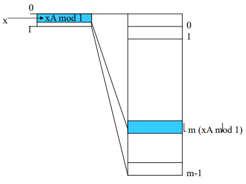
2절. 충돌¶
충돌(Collision)¶
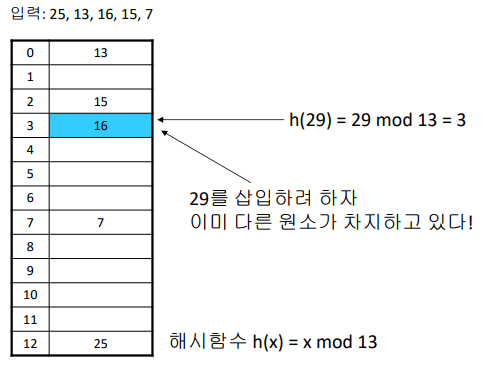
- 해시 테이블의 한 주소를 두 개 이상의 원소가 경쟁하는 경우
충돌 해결(Collision Resolution)¶
-
체이닝(Chaining)
-
같은 주소로 해싱되는 원소를 모두 하나의 연결 리스트(Linked List)로 관리
-
추가적인 연결 리스트 필요
-
개방 주소 방법(Open Addressing)
-
충돌이 일어나도 주어진 테이블에서 해결
- 추가적 공간 불필요
3절. 체이닝¶
체이닝¶
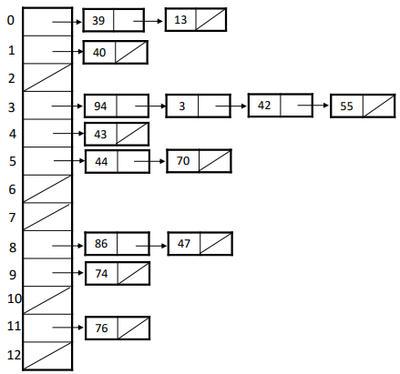
- 적재율이 1 이상일 수 있음
4절. 개방 주소¶
개방 주소¶
- 빈자리가 생길 때까지 해시값 생성
- \(h_{0}(x), h_{1}(x), h_{2}(x), h_{3}(x), ···\)
개방 주소 3가지 방법¶
- 선형 조사(Linear Probing)
- 이차원 조사(Quadratic Probing)
- 더블 해싱(Double Hashing)
선형 조사(Linear Probing)¶
- \(h_i(x)\) = \((h(x) + i)\) \(mod\) \(m\)
선형 조사 예시¶
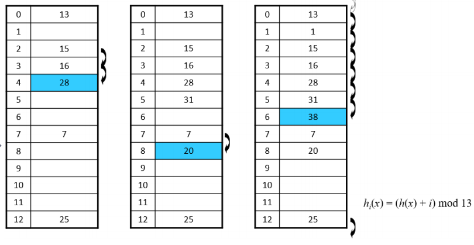
- 입력 순서
- 25, 13, 16, 15, 7, 28, 31, 20, 1, 38
- 해시 함수
- \(h_i(x)\) = \((h(x) + i)\) \(mod\) \(13\)
선형 조사 문제점 : 1차 군집¶
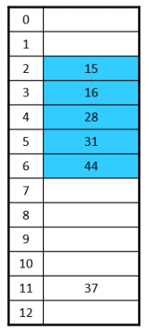
- Primary Clulstering(1차 군집)
- 특정 영역에 원소가 몰리는 현상
이차원 조사(Quadratic Probing)¶
- \(h_i(x)\) = \((h(x) + c_{1}i^{2} + c_{2}i)\) \(mod\) \(m\)
이차원 조사 예시¶
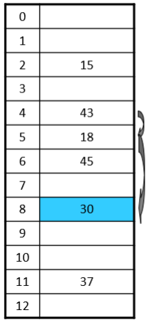
- 입력 순서
- 15, 18, 43, 37, 45, 30
- 해시 함수
- \(h_i(x)\) = \((h(x) + i^{2})\) \(mod\) \(13\)
이차원 조사 문제점 : 2차 군집¶
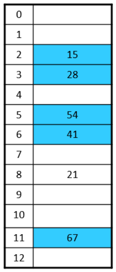
- Secondary Clulstering(2차 군집)
- 여러 원소가 동일한 초기 해시 함수값을 갖는 현상
더블 해싱(Double Hashing)¶
- \(h_i(x)\) = \((h(x) + if(x))\) \(mod\) \(m\)
- \(f(x)\) = 1 + (\(x\) \(mod\) \(n\))
더블 해싱 예시¶
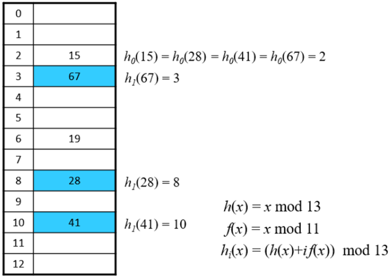
- 입력 순서
- 15, 19, 28, 41, 67
- 첫 번째 해시 함수
- \(h_i(x)\) = \((h(x) + if(x))\) \(mod\) \(13\)
- 두 번째 해시 함수
- \(f(x)\) = \(x\) \(mod\) \(11\)
- n과 m, 11과 13이 서로소
- 적재율 상승 시 효율 저하
- 임계점 지정 후 넘을 경우 테이블 크기를 두 배로 설정
더블 해싱 문제점 : 삭제 진행¶
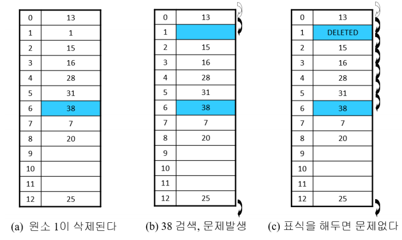
5절. 검색¶
해시 테이블 검색 시간¶
- 적재율(\(α\))
- 해시 테이블 전체의 원소 비율
- m 크기의 테이블에 n 개의 원소가 있을 경우
- \(α = \frac{n}{m}\)
- 검색 효율과의 관련성 존재
정리 1, 2 : 체이닝¶
- 적재율이 \(α\)인 경우
| 검색 종류 | 조사 횟수 기대치 |
|---|---|
| 실패하는 검색 | \(α\) |
| 성공하는 검색 | \(1 + \frac{α}{2} - \frac{α}{2n}\) |
정리 2 : 성공하는 검색 조사 횟수 기대치¶
- 검색하는 원소 x가 i번째 저장된 경우
- 원소 x 검색을 위해 필요한 조사 횟수
- \(1 + \Sigma^{n}_{j=i+1}\frac{1}{m}\)
- n : 원소 수
- m : 테이블 크기
- 모든 원소에 진행하므로 평균 계산
정리 3, 4 : 개방 주소¶
-
가정
-
조사 순서 \(h_{0}(x), h_{1}(x), h_{2}(x), ···, h_{m - 1}(x)\) 가 0부터 m - 1 사이의 수로 이루어진 순열
-
모든 순열은 같은 확률로 발생
-
적재율이 \(α = \frac{n}{m}\)인 경우
| 검색 종류 | 조사 횟수 기대치 |
|---|---|
| 실패하는 검색 | 최대 \(\frac{1}{(1-α)}\) |
| 성공하는 검색 | 최대 \(\frac{1}{α}log\frac{1}{(1- α)}\) |
정리 3 : 실패하는 검색 조사 횟수 최대 기대치¶
-
\(p_i\)
-
빈자리 검색 전 이미 점유된 주소를 "정확히" i번 조사할 확률
-
이미 점유된 주소를 조사한 경우는 실패한 검색
-
\(q_i\)
-
빈자리 검색 전 이미 점유된 주소를 "적어도" i번 조사할 확률
-
\(q_{1} = \frac{n}{m}, q_{2} = \frac{n(n - 1)}{m(m - 1), ···}\)
-
조사횟수의 기대값
- \(1 + \Sigma_{i ≥ 0}i\) \(p_{i}\)
- (\(= 1 + 1 * p_1 + 2 * p_2 + 3 * p_3 + ...\))
-
다만 \(p_i = q_i - q_{i + 1}\) 이면서 \(q_i ≤ 𝛼^i(p_{4} = q_{4} - q_{5})\) 이다.
-
\(1 + \Sigma_{i ≥ 0}i × p_{i}\)
- \(= 1 + \Sigma_{i ≥ 1}i × (q_{i} - q_{i + 1})\)
- $= (1 + \Sigma{i ≥ 1}q_i) ≤ (1 + \Sigma) $} 𝛼^{i
- \(= \frac{1}{(1-α)}\)
정리 4 : 성공하는 검색 조사 횟수 최대 기대치¶
- 적재율 (i번째 원소 삽입) = \(\frac{i}{m}\)
- x가 i + 1번째 삽입 원소인 경우 이때까지 실패한 검색 횟수의 최댓값 : \(\frac{1}{1 - \frac{i}{m}}\) = \(\frac{m}{m - i}\)
- 위 값의 평균
- \(\frac{1}{n} \Sigma^{n - 1}_{i = 0} \frac{m}{m - i}\)
- \(= \frac{m}{n} \Sigma^{n - 1}_{i = 0} \frac{1}{m-i}\)
- \(≤ \frac{1}{𝛼} \int_0^n \frac{1}{m-x}dx\)
- \(= \frac{1}{𝛼} log (\frac{1}{1-𝛼})\)
6절. Hashing 확률¶
모든 경우의 수는 n개의 item과 k개의 저장소(slot)를 전제로 진행
적어도 한 번 이상 충돌이 발생할 확률¶
- 적어도 한 번 이상의 충돌이 발생할 확률 = 1 - 충돌이 발생하지 않을 확률
- 충돌이 발생하지 않을 확률
- \(\frac{k}{k} × \frac{k-1}{k} × \frac{k-2}{k} × ... ×\frac{k-n+1}{k}\)
- 적어도 한 번 이상 충돌이 발생할 확률
총 충돌 횟수의 평균값¶
- 첫 번째 item이 하나의 slot에 삽입
- 나머지 n - 1개의 item이 첫 번째 item이 있는 위치로 놓이는 확률 = \(\frac{1}{k}\)
- 첫 번째 item과 충돌하는 횟수 = \(\frac{(n - 1)}{k}\)
-
두 번째 item이 임의의 slot에 삽입
-
나머지 n - 2개의 item이 첫 번째 item이 있는 위치로 놓이는 확률 = \(\frac{2}{k}\)
-
두 번째 item과 충돌하는 횟수 = \(\frac{(n - 2)}{k}\)
-
위의 과정을 계속 반복
-
총 충돌 횟수 평균값
-
\(\Sigma_{i=1}^{n-1} \frac{i}{k} = \frac{n(n-1)}{2k}\)
-
따라서 \(k=\frac{n^2}{2}\) 인 경우 1회 정도 충돌 발생
생일 문제(Birthday Paradox)¶
- 방 안의 n명 중 적어도 2명의 생일이 같을 확률 ( = 사건 A)
- \(A'\)(\(A\)의 여집합)의 확률
- \(\frac{365}{365} \frac{364}{365} \frac{363}{365} ... \frac{365-n+1}{365}\) : n명의 생일이 모두 다를 확률
- \(P(A)\)
- \(1-P(A')\)
- \(=\frac{365 * 364 * 363 * ... * (365-n+1)}{365}\)
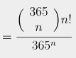
- n = 30인 경우 \(P(A) = 70.6\)%
- 30명 중 적어도 2명의 생일이 같을 확률 70.6%
- n = 10인 경우 \(P(A) = 11.7\)%
- n = 23인 경우 \(P(A) = 50.7\)%
- n = 70인 경우 \(P(A) = 99.9\)%
한 저장소에 들어가는 item의 기댓값¶
- \(P(Y_i = 1) = \frac{1}{k}\)
- 즉, \(E(Y_i) = \frac{1}{k}\)
- \(Y = Y_1 + Y_2 + ... + Y_n\)
- \(E(Y) = \frac{n}{k}\)
- 평균 \(\frac{n}{k}\) 개 저장
비어 있는 저장소 평균값(Expected Number of Empty Slots)¶
- 어떤 특정 저장소 j가 n개의 item이 주어진 후에도 비어있을 확률
- \((1-\frac{1}{k})^n\)
- \(E[X_j] = (1-\frac{1}{k})^n\)
- \(X = X_1 + X_2 + ... + X_n\)
- \(E[X] = k(1-\frac{1}{k})^n\)
충돌 횟수 평균값¶
- 충돌 횟수(Z)는 비어 있는 저장소의 수로 계산
- X = 비어 있는 저장소 수
- k - X는 비어 있지 않은 저장소의 수
- item n개가 k - X개 저장소에 존재
- 충돌 횟수 = n - k + X 번 발생
- 충돌 횟수 평균값
- \(E[Z]\)
- \(= n-k+E[X]\)
- \(=n-k+k(1-\frac{1}{k})^n\)
저장소를 모두 채울 때 필요한 item 수¶
- \(X_j\) = \(j\)번 slot을 채우는 데 필요한 item 수
- (\(j-1\))까지 채워졌을 때 빈 slot
- (\(k - j + 1\))
- item이 비어 있는 slot으로 갈 확률 p
- \(\frac{(k-j+1)}{k}\)
- 성공 확률이 p인 경우
- 성공하기 위한 기댓값 = \(\frac{1}{p}\)
- \(E(X_j)=\frac{k}{(k-j+1)}\)
- \(X = X_1 + X_2 + ... + X_n\)
-
\(E[X]\)
-
\(=\Sigma_{j=1}^kE(X_j)\)
- \(=\Sigma_{j=1}^k\frac{k}{k-j+1}\)
- = \(k\Sigma_{j=1}^k\frac{1}{j}\)
-
\(kH_k\)
-
\(ln(k+1) ≤ H_k ≤ (1 + ln(k))\)